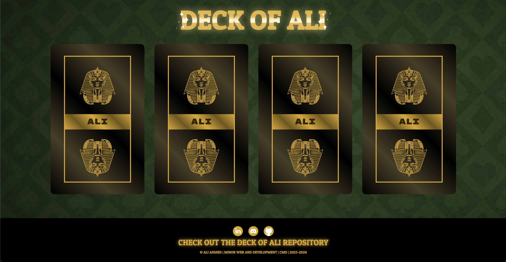
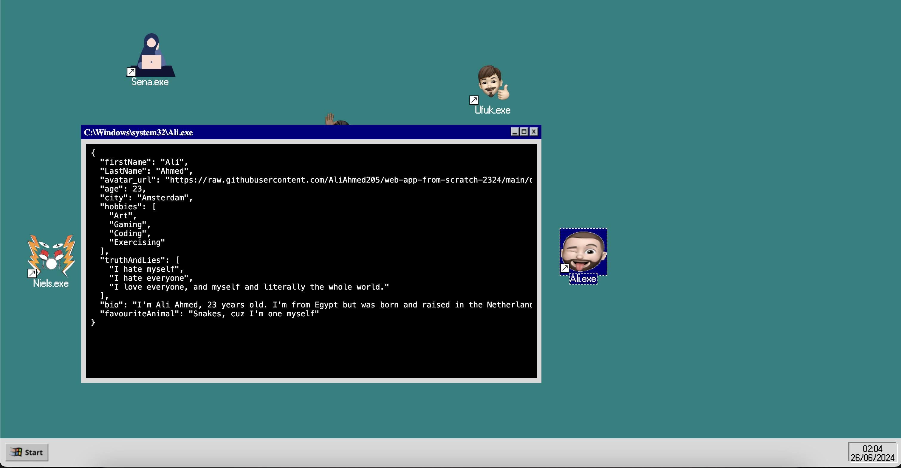
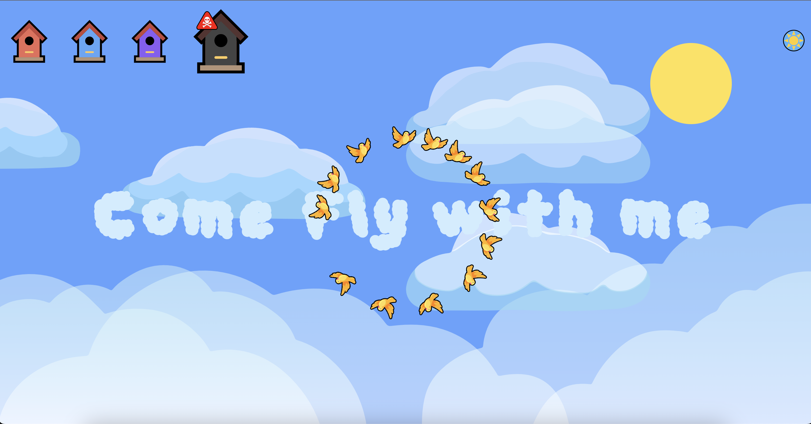
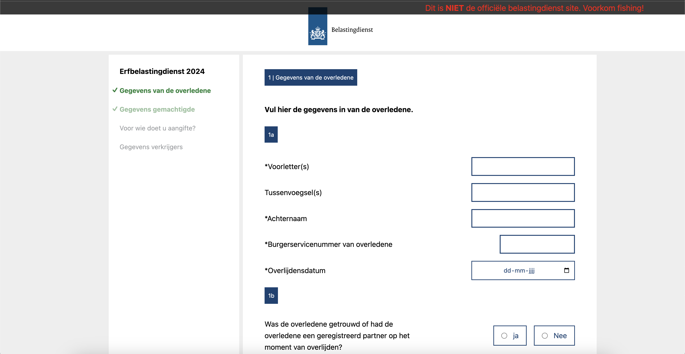
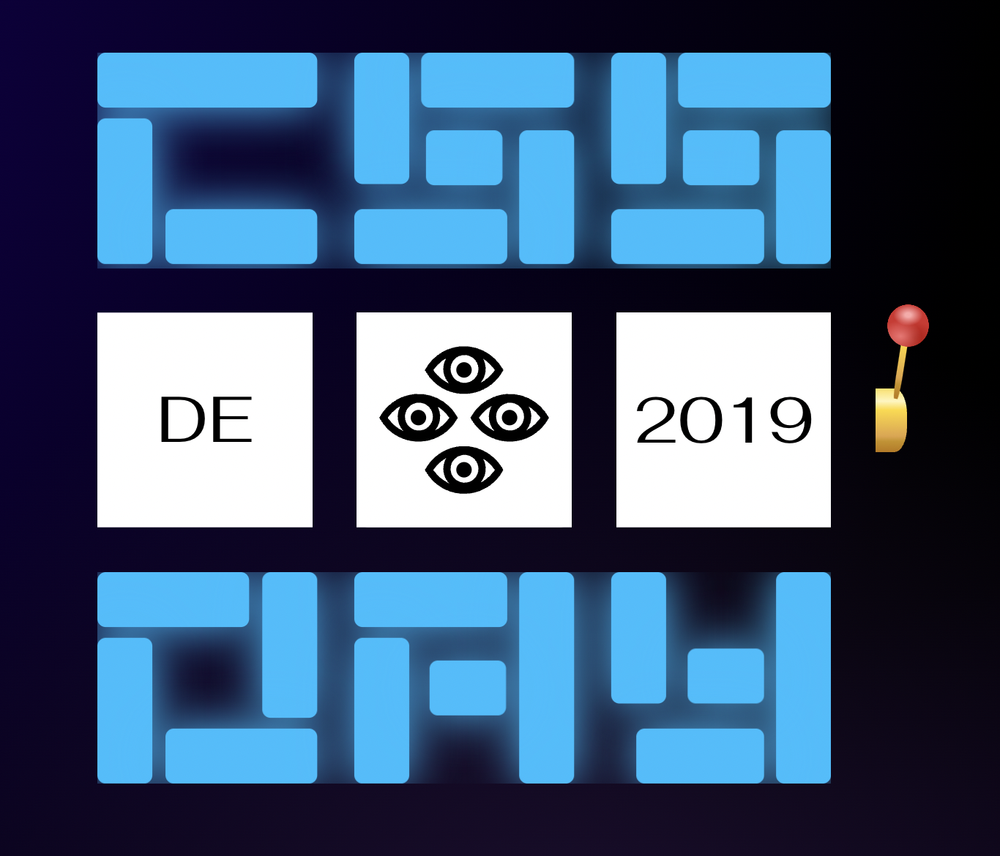

In this evaluation, I will share my experiences, observations, and reflections on each course individually, while also expressing my appreciation for the instructors who contributed to my learning process. I hope this evaluation provides valuable insights into my learning experience during this minor and serves as input for further improvement and development of the minor.
Web-apps from scratch
The first course of the minor was a good refresher for me. Before the minor began, I was already familiar with HTML/CSS and some JavaScript. With the help of Marten and Bas, I learned more about JSON and fetching data via APIs. During my self-study of JavaScript, I focused on practicing writing functions and adjusting CSS. Both the individual and group assignments went well.
Individual
Team
CSS 2 the Rescue
So far, I've learned a lot from CSS 2 the Rescue. Thanks to the weekly workshops by Sanne, Nils, and Roel, I
could code various interesting things. I especially want to thank Sanne, who even helped me late into the
evening with my assignment, sometimes until 5:00 or 6:00 pm. The discovery of :has() was truly
enlightening for me. I never thought CSS calculations could be so useful. I learned about calc, as well
as lvh, dvh, rem, em, vw, and vh. Additionally, I learned a lot about efficiently using variables by
setting certain values beforehand and using them later. At one point, Sanne and I made values so flexible that
assigning them felt almost like assigning a simple number, after which everything fit perfectly. Overall, I
found this to be a fantastic course from which I gained a lot.
Browser Technologies
Peter Paul Koch, better known as PPK, imparted a lot of theoretical knowledge about browsers and the rules associated with them. Although unlike CSS 2 the Rescue, we did fewer practical exercises, this course greatly enhanced my independence. I started searching more on the internet and looked for ways to implement the functionalities I desired. Here, I also got acquainted with localStorage, which I honestly had never heard of before. It's a handy local database where I could store my form data. I also found validation interesting, and thanks to the :has() method, I could mimic certain JavaScript validations. I especially kept in mind that the site had to remain functional to a certain extent. The assessment went well, and I am satisfied with both my grade and the outcome.
Hackaton
During the CSS Day - 10th Edition hackathon, our team created an interactive website featuring a unique “CSS Slotmachine” for data exploration. I focused on styling and user interaction, using each year’s color theme consistently. Collaborating with Kevin, Bart, and Tristan, we faced some challenges but maintained effective communication. I gained insights into database integration and honed my JavaScript skills for dynamic class management. Despite initial concept challenges, I valued contributing professionally and supporting team cohesion during presentations.
API
I think this might have been the most enjoyable course we had. I found the API very fascinating, especially what Cyd and Declan showed me regarding routing and functionalities. It took some puzzling, but I eventually achieved the desired result. It was nice to work with Node.js again, as I found it very captivating last year as well. Dynamic websites generating content from a database appeal to me. Although I had some knowledge from last year, Declan's short tutorial at the beginning of the minor helped me get back on track. This time, I wanted to approach it differently, especially visually. I opted for the streaming service web app and felt that the studios deserved more representation. Therefore, I created a unique style for each studio and ensured that only Disney films, for example, appeared on the Disney page, and Sony films on the Sony page, etc. Overall, I appreciated the freedom we were given, and I finished the course with a perfect score! A shoutout to Declan and Cyd, who really helped me exceptionally well and gave me valuable tips.
Human Centered Design
This course certainly made me aware of something important. I discovered a new world of possibilities often overlooked by large companies managing websites with a large number of daily users. My experience with Petra, who is blind, and building for her was truly unique. I felt honored to offer her a new option in her life with mobile use. She also shared her own experiences with existing apps and how she navigated using her iPhone. It was a challenging process, but Petra was very pleased with the result, as were Eric, Tamara, and Vasilis. Their enthusiasm and weekly presentations expanded my understanding of the world of accessibility and emphasized its importance. It showed me that it doesn't always have to be boring and that there is occasional room for levity, because these special users are still people. This course ensured that I will apply inclusive design where necessary.